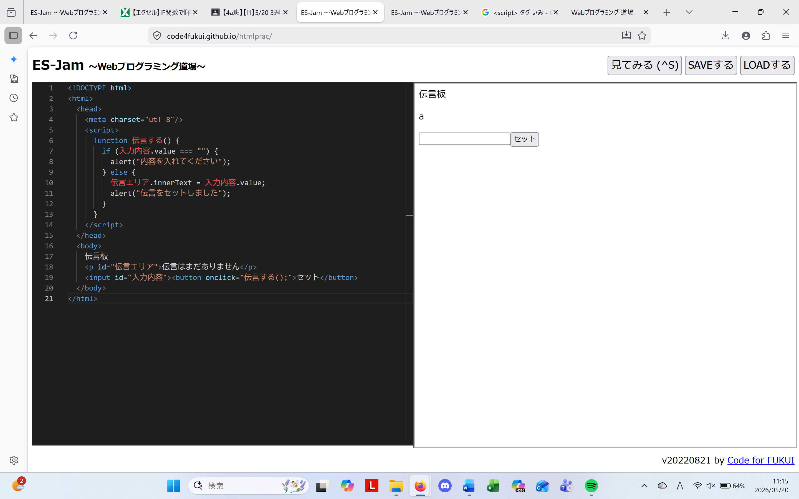

3-2 JavaScript体験：伝言プログラムを作る

伝言板
1.内容
伝言を入力する場所を作り、入力した文字が伝言板に表示されるようなコードの制作を行った。文字を入力している場合と、していない場合で表示するアラートを変えた。他にも、headタグやbodyタグなど、自分が書いたコードをタグごとにまとめた。
2.感想
自分が書いた伝言を実際に作った伝言板に表示できた。このことから、色々なwebサイトの最下部にあるコメント欄やレビュー機能などは、伝言板と同じようなコードで構成されているのかなと考えることができた。身近なwebサイトの仕組みを考えるきっかけになった。